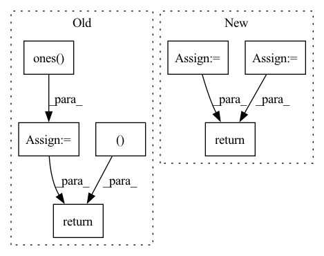

Pattern ID :36944

Before Change
//in-batch negative sample
//!! TODO: use mask matrix. It"s slow now.
batch_size = y.size(0)
scores = torch.ones(batch_size, 1 + self.n_neg, device=y.device) //positive sample in the first position.
y_expand = torch.cat((y, y))
for i in range(batch_size):
scores[i, :] = torch.cat((y_expand[i].view(-1), y_expand[i + 1:i + 1 + self.n_neg]))
scores = scores / self.temperature
return scores //(batch_size, 4)
def user_tower(self, x):
if self.mode == "item":
After Change
index0[np.where(index0 >= batch_size)] -= batch_size
index1[np.where(index1 >= batch_size)] -= batch_size
scores = scores[index0, index1]
else:
scores = scores[self.index0, self.index1]
scores = scores / self.temperature
return scores.view(-1, self.n_neg + 1) //(batch_size, 1 + self.n_neg)
def user_tower(self, x):
if self.mode == "item":
In pattern: SUPERPATTERN
Frequency: 4
Non-data size: 7
Instances
Fragment ID: 105176484
Project Name: datawhalechina/torch-rechub
Commit Name: d0461152ddffad7a6bf7c7532b7b540094623e95
Time: 2022-06-07
Author: icewwl@163.com
File Name: torch_rechub/models/matching/youtube_sbc.py
M Class Name: YoutubeSBC
N Class Name: YoutubeSBC
M Method Name: forward(2)
N Method Name: forward(2)
M Parent Class: torch.nn.Module
N Parent Class: torch.nn.Module
M File Name: torch_rechub/models/matching/youtube_sbc.py
N File Name: torch_rechub/models/matching/youtube_sbc.py
M Start Line: 55
M End Line: 80
N Start Line: 60
N End Line: 87
'>
Before Change
device = anchors.device()
if groundtruth_labels is None:
groundtruth_labels = torch.ones(groundtruth_boxes.num_boxes(), device=device).unsqueeze(0)
groundtruth_labels = groundtruth_labels.unsqueeze(-1)
if groundtruth_weights is None:
num_gt_boxes = groundtruth_boxes.num_boxes()
if not num_gt_boxes:
num_gt_boxes = groundtruth_boxes.num_boxes()
groundtruth_weights = torch.ones([num_gt_boxes], device=device)
match_quality_matrix = self._similarity_calc.compare(groundtruth_boxes, anchors)
match = self._matcher.match(match_quality_matrix)
reg_targets = self._create_regression_targets(anchors, groundtruth_boxes, match)
cls_targets = self._create_classification_targets(groundtruth_labels, match)
reg_weights = self._create_regression_weights(match, groundtruth_weights)
cls_weights = self._create_classification_weights(match, groundtruth_weights)
return cls_targets, cls_weights, reg_targets, reg_weights, match
def _create_regression_targets(self, anchors: BoxList, groundtruth_boxes: BoxList, match: Match):
Returns a regression target for each anchor.
After Change
//reg_weights = self._create_regression_weights(match, groundtruth_weights)
//cls_weights = self._create_classification_weights(match, groundtruth_weights)
return cls_targets, reg_targets, match
def _create_regression_targets(self, anchors: BoxList, groundtruth_boxes: BoxList, match: Match):
Returns a regression target for each anchor.
'>
Fragment ID: 105176547
Project Name: rwightman/efficientdet-pytorch
Commit Name: 2d4f7b4517a41bf3494e9fcd0735394862d391d8
Time: 2020-10-06
Author: rwightman@gmail.com
File Name: effdet/object_detection/target_assigner.py
M Class Name: TargetAssigner
N Class Name: TargetAssigner
M Method Name: assign(5)
N Method Name: assign(5)
M Parent Class: object
N Parent Class: object
M File Name: effdet/object_detection/target_assigner.py
N File Name: effdet/object_detection/target_assigner.py
M Start Line: 132
M End Line: 151
N Start Line: 147
N End Line: 153
'>
Before Change
micro, macro = micro_macro(data.test_node_class, pred)
accuracy = np.zeros(shape=data.n_a_type) // auprc, auroc, ap
for i in range(data.test_range.shape[0]):
[start, end] = data.test_range[i]
s = score[start: end]
t = torch.ones(size=s.shape)
accuracy[i] = acc(t, s)
return accuracy, micro, macro
// if __name__ == "__main__":
After Change
micro, macro = micro_macro(data.test_node_class, pred)
return micro, macro
// if __name__ == "__main__":
// hhh
'>
Fragment ID: 105176526
Project Name: nyxflower/gripnet
Commit Name: 6a1abf4efb8aad81109d87bf4029c5b1bb830875
Time: 2020-04-17
Author: nyx0flower@gmail.com
File Name: grip-auta.py
M Class Name: AnonimousClass
N Class Name: AnonimousClass
M Method Name: test(1)
N Method Name: test(1)
M Parent Class:
N Parent Class:
M File Name: grip-auta.py
N File Name: grip-auta.py
M Start Line: 114
M End Line: 125
N Start Line: 109
N End Line: 114
'>
Before Change
// print("gt shape:", gt.shape)
N, H, W = gt.shape
ord_c0 = torch.ones(N, self.ord_num, H, W).to(gt.device)
ord_label = torch.ones(N, self.ord_num*2, H, W).to(gt.device)
if self.discretization == "SID":
label = self.ord_num * torch.log(gt) / np.log(self.beta)
else:
label = self.ord_num * (gt - 1.0) / (self.beta - 1.0)
label = label.long()
mask = torch.linspace(0, self.ord_num - 1, self.ord_num, requires_grad=False) \
.view(1, self.ord_num, 1, 1).to(gt.device)
mask = mask.repeat(N, 1, H, W).contiguous().long()
mask = (mask > label)
ord_c0[mask] = 0
ord_c1 = 1 - ord_c0
ord_label[:, 0::2, :, :] = ord_c0
ord_label[:, 1::2, :, :] = ord_c1
return ord_label
def __call__(self, prob, gt):
After Change
// ord_label[:, 0::2, :, :] = ord_c0
// ord_label[:, 1::2, :, :] = ord_c1
// reimplementation for fast speed.
ord_label = torch.cat((ord_c0, ord_c1), dim=1)
return ord_label, mask
def __call__(self, prob, gt):
'>
Fragment ID: 105176463
Project Name: dontlovebugs/superviseddepthprediction
Commit Name: a29756ee2e089a313d149f6fa3ea441d955e42a0
Time: 2020-05-04
Author: wangxin_buaa@163.com
File Name: dp/modules/losses/ordinal_regression_loss.py
M Class Name: OrdinalRegressionLoss
N Class Name: OrdinalRegressionLoss
M Method Name: _create_ord_label(2)
N Method Name: _create_ord_label(2)
M Parent Class: object
N Parent Class: object
M File Name: dp/modules/losses/ordinal_regression_loss.py
N File Name: dp/modules/losses/ordinal_regression_loss.py
M Start Line: 27
M End Line: 41
N Start Line: 34
N End Line: 43